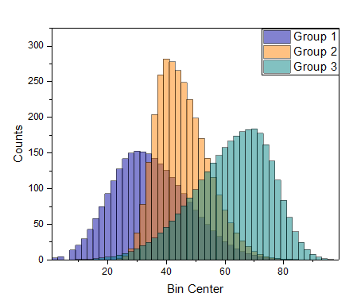
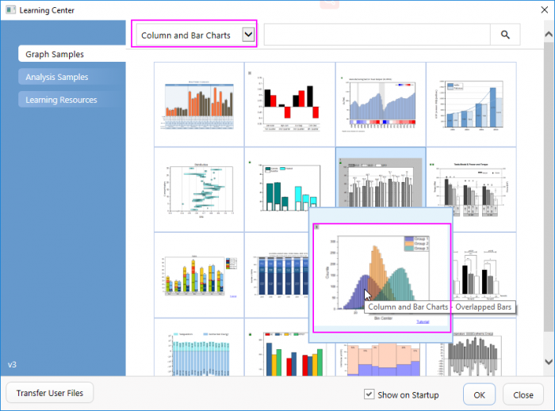
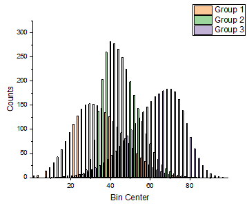
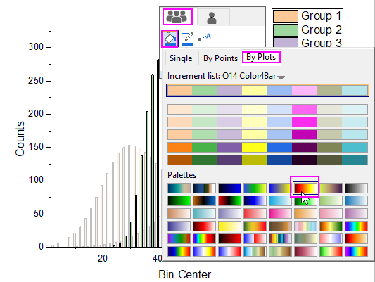
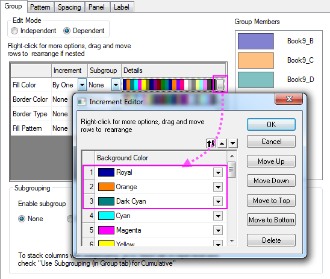
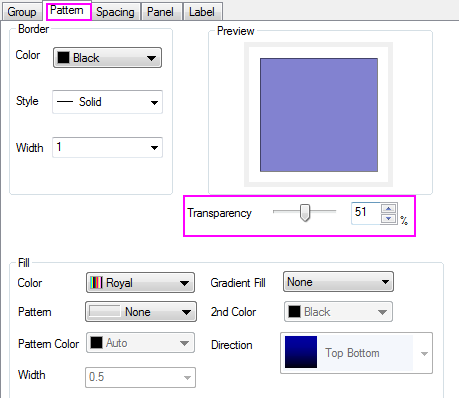
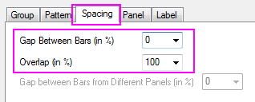

Sich überschneidende Daten zeichnen und Transparenz festlegen
Customize-Color-Transparancy
Zusammenfassung
In diesem Tutorial erfahren Sie, wie Sie sich überschneidende Säulendiagramme erstellen und dann Transparenzeinstellungen vornehmen, um die sich überschneidenden Teile sichtbar zu machen.

Was Sie lernen werden
Dieses Tutorial zeigt Ihnen, wie Sie:
- gruppierte Säulendiagramme benutzerdefiniert anpassen,
- Transparenz festlegen.
Schritte
- Wählen Sie im Menü Hilfe: Lernzentrum, um den Dialog Lernzentrum zu öffnen. Wählen Sie Diagrammbeispiel im linken Bedienfeld und dann Säulen- und Balkendiagramme in der Auswahlliste rechts. Klicken Sie doppelt auf das letzte Miniaturbild unten, um den Ordner Overlapped Bars zu öffnen.

- Markieren Sie alle Spalten im Arbeitsblatt [Counts]Sheet1. (Die Quelldaten Counts.dat können auch aus dem Ordner <Origin-Verzeichnis>\Samples\Graphing\ importiert werden). Wählen Sie im Menü Zeichnen > Einfache 2D: Säulen, um ein Säulendiagramm zu erstellen.

- Klicken Sie auf einen der Balken im Diagramm und in der angezeigten Minisymbolleiste auf die Schaltfläche Füllfarbe
 auf der Registerkarte Gruppe
auf der Registerkarte Gruppe  , um die Farbauswahl zu erweitern. Wählen Sie in der Farbauswahl auf der Unterregisterkarte Nach Zeichnungen die Farbliste oder -palette, die Sie auf die Balkenfarbe anwenden möchten.
, um die Farbauswahl zu erweitern. Wählen Sie in der Farbauswahl auf der Unterregisterkarte Nach Zeichnungen die Farbliste oder -palette, die Sie auf die Balkenfarbe anwenden möchten.

 | Sie können zum Öffnen des Dialogs Details Zeichnung auch doppelt auf das Diagramm klicken. Wechseln Sie im Dialog zur Registerkarte Gruppe. Klicken Sie auf die Schaltfläche Details in der Zeile Füllfarbe, um den Dialog Inkrementeditor zu öffnen. Auf diesem Dialogfeld können Sie die ersten drei Farben als spezielle Farben, wie z.B. Königsblau, Orange und Dunkelcyan, festlegen. Klicken Sie auf OK, um den Dialog zu schließen.

|
- Klicken Sie doppelt auf die Zeichnung, um den Dialog Details Zeichnung zu öffnen. Gehen Sie zur Registerkarte Muster und setzen Sie die Transparenz auf 51 %.

- Wechseln Sie zur Registerkarte Abstände und setzen Sie Lücken zwischen Balken auf Null und Überschneidung auf 100.

- Klicken Sie auf OK, um den Dialog Details Zeichnung zu schließen. Wählen Sie im Menü Ansicht: Zeige: Rahmen, um den Rahmen hinzuzufügen. Das sich ergebende Diagramm sollte wie im unten stehenden Bild aussehen.